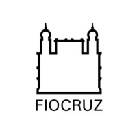

FIOCRUZ - Fundação Oswaldo Cruz
- Master of Science - MS, Comunicação e SaúdeMaster of Science - MS, Comunicação e Saúde
- 2017 - 2019
 Estácio
Estácio
- Systems Analysis and Development
- 2025 - 2027

With nearly twenty years of experience in management and communication in the energy, healthcare, and finance sectors, I have been specializing in data science, information management, and business intelligence, developing an area of knowledge that has always sparked my interest and curiosity.